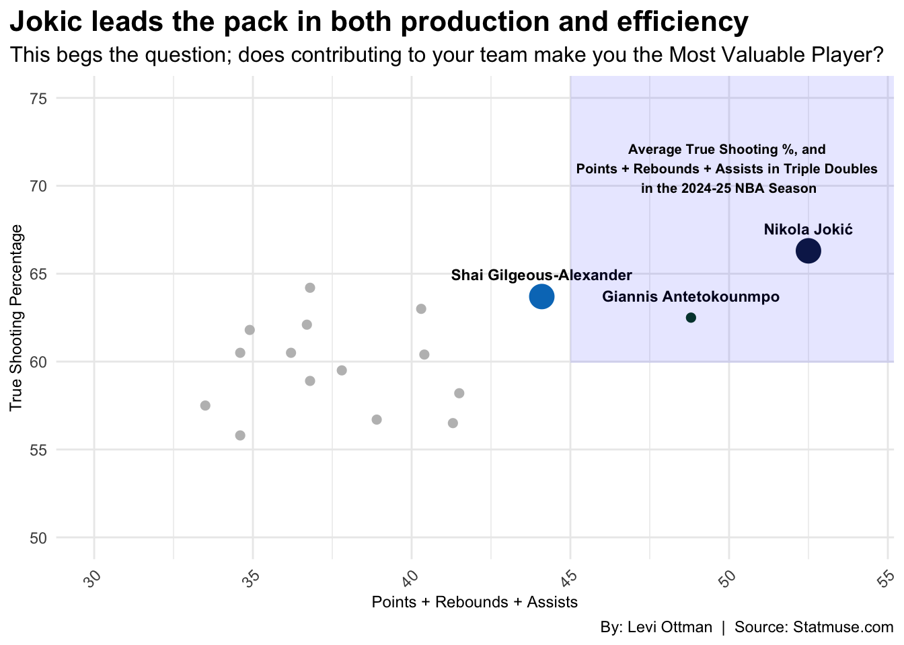
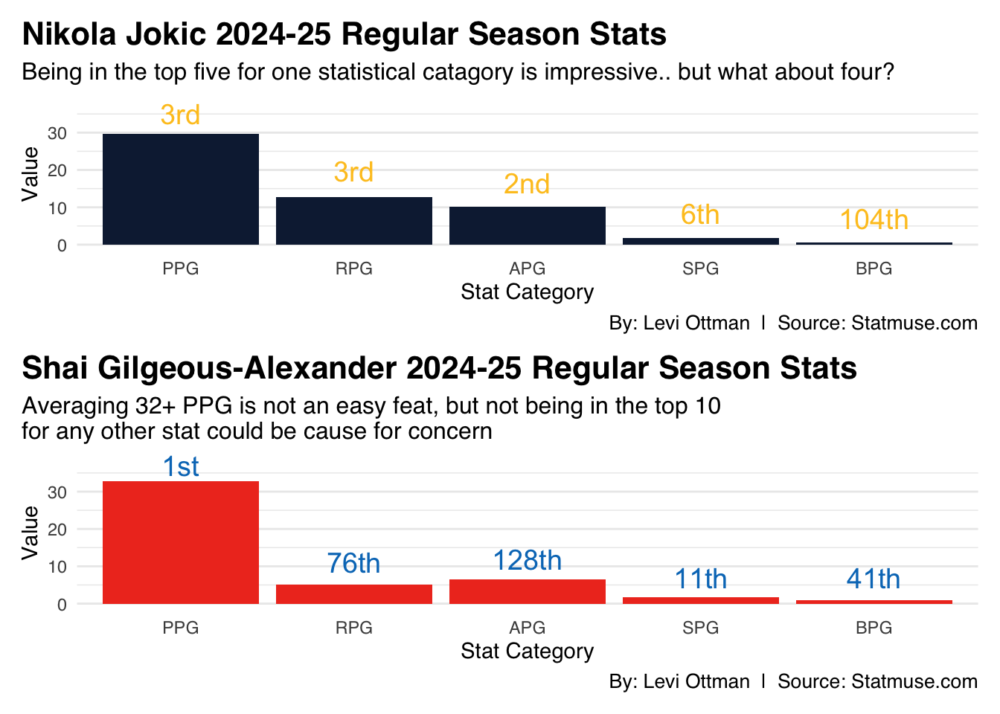

Jokic or SGA; Who is more deserving of the 2024-25 NBA MVP award?
nba
mvp
jokic
sga
Author
Levi Ottman
Published
April 30, 2025
When you think of the term; Most Valuable Player, what comes to mind? An acceptable definition of the term “MVP” is: “An award given to the athlete who is considered the most outstanding or impactful in a season, or individual who has contributed the most to their team’s success. The three finalists for the 2024-25 NBA MVP are Nikola Jokic, Shai Gilgeous-Alexander, and Giannis Antetokounmpo. For this article, I will be focusing on the two players who have the best case for MVP; Gilgeous-Alexander, and Jokic.
The case for SGA: when it comes to the MVP award, is that he has led his team to a historic season. The Oklahoma City Thunder went 68-14, which is just five games behind the most wins in an NBA season, set by the Golden State Warriors. The Thunder also had the best record in the NBA, and clinched the number one seed in the Western Conference before the month of April, and secured it with a margin of 16 games.
SGA finished the season as the league’s leading scorer, averaging 32.7 PPG, putting up 5 rebounds per game, and 6.4 assists per game.
The case for Jokic: Nikola Jokic has had a season statline that has only been seen twice before. Jokic joined Russell Westbrook and Oscar Robertson on the exclusive list of NBA players to average a triple double in a season, putting up a split of 29.6/12.7/10.2.
Nikola Jokic also made NBA history this season, becoming the first player to put up a 30-point, 20-rebound, 20-assist game, finishing with 31, 21 and 22, respectively. Jokic also record a 60-point triple double this season, which marks the third time in NBA history that has occured.
Points + Rebounds + Assists should be considered more than solely points per game, when it comes to the most “valuable” player (to their team), as getting teammates involved in scoring, and grabbing rebounds helps your team succeed. Another stat that could be considered important is True Shooting %. “rue Shooting Percentage (TS%) in basketball is a statistic that measures how efficiently a player scores by considering all shot attempts, including field goals, three-pointers, and free throws. It is considered a more accurate measure of a player’s shooting efficiency than traditional field goal percentage alone. In simple terms, a higher TS% = a more efficient scorer.
Code
library(tidyverse)library(ggalt)library(ggrepel)library(gt)library(waffle)library(patchwork)#| fig.align = 'center'regularseason <-read_csv("/Users/leviottman/Desktop/School/Office Documents/Spring 2025/Sports Data Analysis/Major Assignment/sportsBlog/posts/nba-mvp-2025/data/NBA_2024_25_stats.csv")tripledoubles <-read_csv("/Users/leviottman/Desktop/School/Office Documents/Spring 2025/Sports Data Analysis/Major Assignment/sportsBlog/posts/nba-mvp-2025/data/NBA_2024_25_tripledoubles.csv")topscorers <-read_csv("/Users/leviottman/Desktop/School/Office Documents/Spring 2025/Sports Data Analysis/Major Assignment/sportsBlog/posts/nba-mvp-2025/data/NBA_top_scorers_stats.csv")Jokic <- topscorers |>filter(PLAYER =="Nikola Jokić")SGA <- topscorers |>filter(PLAYER =="Shai Gilgeous-Alexander")Giannis <- topscorers |>filter(PLAYER =="Giannis Antetokounmpo")ggplot(data = topscorers, aes(x = PRA, y =`TS%`)) +geom_point(data = topscorers, aes(x = PRA, y =`TS%`), color ="gray", size =2) +geom_point(data = Giannis, aes(x = PRA, y =`TS%`), color ="#00471B", size =2) +geom_point(data = Jokic, aes(x = PRA, y =`TS%`), color ="#0E2240", size =6) +geom_point(data = SGA, aes(x = PRA, y =`TS%`), color ="#007AC1", size =6) +geom_text(data = Jokic, aes(label = PLAYER), vjust =-1.5, size =3, fontface ="bold") +geom_text(data = SGA, aes(label = PLAYER), vjust =-1.5, size =3, fontface ="bold") +geom_text(data = Giannis, aes(label = PLAYER), vjust =-1.5, size =3, fontface ="bold") +xlim(30, 54) +ylim(50, 75) +annotate("rect",fill ="blue", alpha =0.1, xmin =45, xmax =Inf, ymin =59.92, ymax =Inf) +annotate("text", x =50, y =71, label ="Average True Shooting %, and \nPoints + Rebounds + Assists in Triple Doubles \nin the 2024-25 NBA Season", color ="black", fontface ="bold", size =2.67) +theme_minimal() +theme(panel.grid.minor.y =element_blank(),plot.title =element_text(color ="black", face ="bold", hjust =0, size =16),plot.subtitle =element_text(color ="black", hjust =0, size =12),axis.title.x =element_text(size =9),axis.title.y =element_text(size =9),axis.text.x =element_text(angle =45, hjust =1),plot.title.position ="plot",strip.text =element_text(size =9, face ="italic") ) +labs(x ="Points + Rebounds + Assists", y ="True Shooting Percentage",title = ("Jokic leads the pack in both production and efficiency"),subtitle = ("This begs the question; does contributing to your team make you the Most Valuable Player?"),caption ="By: Levi Ottman | Source: Statmuse.com" )

As the chart above shows, SGA isn’t in the “sweet spot” zone for averaging a triple double when it comes to Points + Rebounds + Assists. Also to note, Jokic is a statistical anomoly when it comes to his TS%, and PRA. But the question remains, if SGA isn’t in the so called “sweet spot”, then how many times has SGA recorded a triple double, or a double double this season?
Code
tripledoubles |>gt() |>cols_label(Player ="Player",TD ="Triple Doubles",DD ="Double Doubles" ) |>tab_header(title ="A table of two extremes: Nikola Jokic, and Shai Gilgeous-Alexander",subtitle ="Jokic has more than triple the amount of triple doubles that second place has this season." ) |>tab_style(style =cell_text(color ="black", weight ="bold", align ="left"),locations =cells_title("title") ) |>tab_style(style =cell_text(color ="black", align ="left"),locations =cells_title("subtitle") ) |>tab_style(style =list(cell_fill(color ="#FEC524"),cell_text(color ="black", weight ="bold") ),locations =cells_body(rows = Player =="Nikola Jokic") ) |>tab_style(style =list(cell_fill(color ="#007AC1"),cell_text(color ="black", weight ="bold") ),locations =cells_body(rows = Player =="Shai Gilgeous-Alexander") )
A table of two extremes: Nikola Jokic, and Shai Gilgeous-Alexander
Jokic has more than triple the amount of triple doubles that second place has this season.
Player
Triple Doubles
Double Doubles
Nikola Jokic
34
59
Giannis Antetokounmpo
11
55
LeBron James
10
32
Damonts Sabonis
10
61
Josh Hart
9
34
Cade Cunningham
9
31
Josh Giddey
7
30
Luka Doncic
5
21
Russell Westbrook
4
13
Alperen Sengun
4
45
Shai Gilgeous-Alexander
0
6
So by the looks of it, Shai Gilgeous-Alexander, doesn’t pass the ball as often as Jokic, or get as many rebounds. Some slack is needed because SGA is a guard, and Jokic is a forward. Even though SGA is a guard, he is still 6’6”, and Jokic is 6’11”. Russel Westbrook, who is also a guard has more triple, and double doubles than SGA has this year so it begs the question, is SGA just a bucket getter or does he actually help his team offensively?
Code
JokicStats <-data.frame(category =factor(c("PPG", "RPG", "APG", "SPG", "BPG"), levels =c("PPG", "RPG", "APG", "SPG", "BPG")),value =c(29.6, 12.7, 10.2, 1.8, 0.6))Jokic_plot <-ggplot(JokicStats, aes(x = category, y = value)) +geom_bar(stat ="identity", fill ="#0E2240") +annotate("text", x =1, y =35, label ="3rd", color ="#FEC524", size =5) +annotate("text", x =2, y =19.7, label ="3rd", color ="#FEC524", size =5) +annotate("text", x =3, y =16.6, label ="2nd", color ="#FEC524", size =5) +annotate("text", x =4, y =8.3, label ="6th", color ="#FEC524", size =5) +annotate("text", x =5, y =7, label ="104th", color ="#FEC524", size =5) +scale_y_continuous(limits =c(0, 38)) +labs(x ="Stat Category", y ="Value",title = ("Nikola Jokic 2024-25 Regular Season Stats"),subtitle = ("Being in the top five for one statistical catagory is impressive.. but what about four?"),caption ="By: Levi Ottman | Source: Statmuse.com",) +theme_minimal(base_family ="sans") +theme(plot.title =element_text(color ="black", face ="bold", hjust =0, size =16),plot.subtitle =element_text(color ="black", hjust =0, size =12),legend.position ="none",plot.caption =element_text(hjust =1, size =10, face ="plain"),panel.grid.major.x =element_blank(),panel.grid.minor.x =element_blank(),plot.title.position ="plot" )SGA <-data.frame(category =factor(c("PPG", "RPG", "APG", "SPG", "BPG"), levels =c("PPG", "RPG", "APG", "SPG", "BPG")),value =c(32.7, 5, 6.4, 1.7, 1))SGA_plot <-ggplot(SGA, aes(x = category, y = value)) +geom_bar(stat ="identity", fill ="#EF3B24") +annotate("text", x =1, y =37, label ="1st", color ="#007AC1", size =5) +annotate("text", x =2, y =11, label ="76th", color ="#007AC1", size =5) +annotate("text", x =3, y =11.9, label ="128th", color ="#007AC1", size =5) +annotate("text", x =4, y =7, label ="11th", color ="#007AC1", size =5) +annotate("text", x =5, y =7, label ="41th", color ="#007AC1", size =5) +scale_y_continuous(limits =c(0, 38)) +labs(x ="Stat Category", y ="Value",title = ("Shai Gilgeous-Alexander 2024-25 Regular Season Stats"),subtitle = ("Averaging 32+ PPG is not an easy feat, but not being in the top 10 \nfor any other stat could be cause for concern"),caption ="By: Levi Ottman | Source: Statmuse.com",) +theme_minimal(base_family ="sans") +theme(plot.title =element_text(color ="black", face ="bold", hjust =0, size =16),plot.subtitle =element_text(color ="black", hjust =0, size =12),legend.position ="none",plot.caption =element_text(hjust =1, size =10, face ="plain"),panel.grid.major.x =element_blank(),panel.grid.minor.x =element_blank(),plot.title.position ="plot" )Jokic_plot / SGA_plot

From the looks of it by the numbers, Jokic should be the clear favorite for MVP, being top 3 is points, rebounds, and assists, as well as top 10 in steals per game. Only time will tell who will be announced as the league’s MVP.